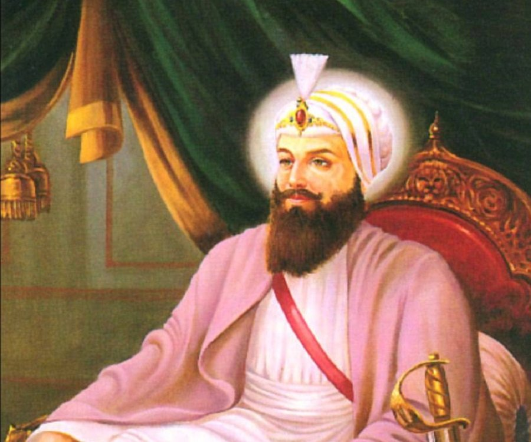

Sikhism Gurus
Guru Nank Dev ji (1469-1539)
Guru Angad Dev ji (1539-1552)
Guru Amar Das Sahib Ji (1552-1574)
Guru Ram Das Sahib ji (1574-1581)
Guru Arjan Dev ji (1581-1606)
Guru Har Gobind Sahib ji (1606-1644)

Guru Har Rai Sahib ji (1644-1661)
Guru Har Krishna Sahib ji (1661-1664)
Guru Tegh Bahadar Sahib ji (1665-1675)
Guru Guru Gobind Singh ji(1675-1708)
Guru Granth Sahib ji (guruship from 1708 to eternity)
>>>>>>>Back
 Sikhism Gurus
Sikhism Gurus